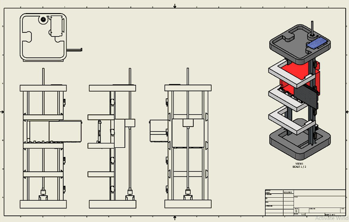

Full system layout
The assembly view shows the overall structure of the project: the multi-floor tower, elevator car, support structure, and lower drive area. This is the cleanest way to introduce the whole design before getting into the electrical and control details.